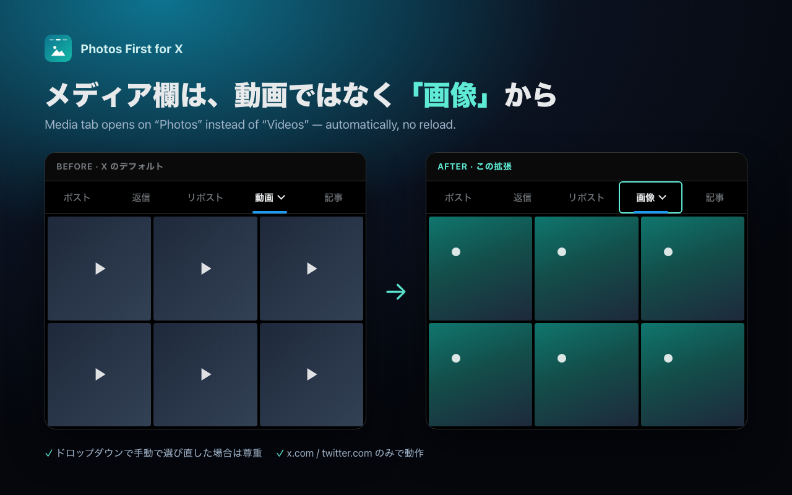

Photos First for XXのメディア欄を画像に戻す（ポストは「すべて」に）
2026 年 7 月の X プロフィール改修で、メディア欄は開くたびに「動画」、ポストは「ポスト」に戻るようになりました。この拡張はプロフィールを開いた瞬間に メディア▼ → 画像、ポスト▼ → すべて を自動で選びます。リロードなし・設定不要・データ収集なし。

設定
| 動作モード | 固定（既定）／ 記憶（ドロップダウンで最後に選んだものを次回以降も使う） |
|---|---|
| ポストタブ | すべて（既定）／ 変更しない |
| メディアタブ | 画像（既定）／ 変更しない |
| 手動選択の尊重 | ON（既定）／ OFF |
インストール時に表示される許可について
インストール時に「x.com と twitter.com のすべてのデータの読み取りと変更」という確認が表示されます。これは X のページ上でタブを切り替える処理を動かすために Chrome が必ず求める標準的な許可で、この拡張はプロフィールページで表示するタブを切り替える以外のことは何もしません。投稿・DM・フォロワー・アカウント情報などを読み取ったり、どこかへ送信したりすることは一切ありません。ソースコードは GitHub で全文公開しています。
X 側の仕様変更で切り替え先が無効になった場合は、自動で元の表示に戻してしばらく動作を止めます（画面が壊れたままにはなりません）。
English
Fixes X's new profile tabs: opens Media on Photos (not Videos) and Posts on All — automatically, without reloading. Options let you turn either rule off or switch to "Remember" mode. No data collection, no network requests, open source (MIT).
On install, Chrome asks to allow "read and change all your data on x.com and twitter.com". That is the standard permission for any extension that acts on a page; this one only switches tabs on profile pages and never reads or sends your posts, DMs or account details.